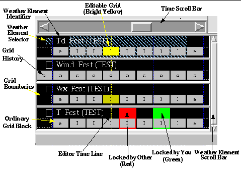

The Grid Manager is arguably the most complex component of the GFE. Its display presents an inventory of the gridded data in the forecast, official or any other model database. With the Grid Manager you can copy all or a portion of another database into your forecast, temporally interpolate time periods to fill in undefined gaps in your forecast, remove grids from your forecast, and many other operations too numerous to mention here. The Grid Manager looks complex because it displays a large amount of information and offers a long list of features that help you manipulate the gridded forecast data. While it's appearance can be intimidating, once you have performed the exercises and understand how each of the features work, you will understand that it is necessarily complex. Refer to the Grid Manager Training Guide for more details.
Below is a snapshot of the Grid Manager component of the GFE along with labels that name its various parts.

Grid
Manager in Normal Display Mode